CRUZADO DA MULA RUSSA
CRUZADO DA MULA RUSSA No dia 17 de Junho, às 17:19h, num grupo do facebook, a propósito de um vintém que qualquer numismata que se preze já sabe que é falsificado há muitos anos, ocorreu-me alertar para um cruzado de D.…
Arquivo Digital de Investigação em Numismática Medieval Portuguesa
Categoria
49 publicações
CRUZADO DA MULA RUSSA No dia 17 de Junho, às 17:19h, num grupo do facebook, a propósito de um vintém que qualquer numismata que se preze já sabe que é falsificado há muitos anos, ocorreu-me alertar para um cruzado de D.…

EMPREENDEDORISMO NO DIA DE SANTO ANTÓNIO Império Numis Leu Numismatik Escrevi um artigo sobre estas moedas há uns tempos, que submeti a publicação na Revista Moeda e que foi rejeitado. A verdade é que, se submeto textos…
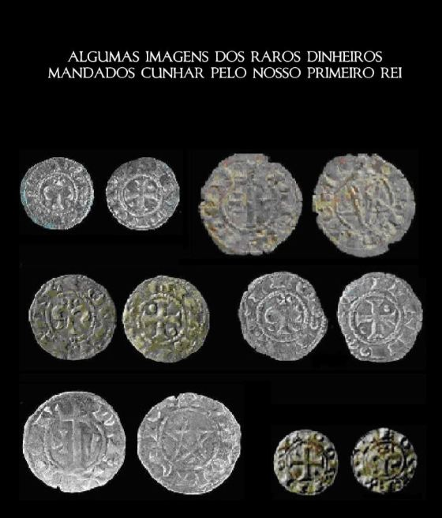
A FASE DO TERROR Acho que já referi, em algum dos meus escritos, este epísódio da história numismática contemporânea nacional, mas penso que o abordei no teatro de operações da ANP. Acontece que a "Fase do Terror" foi…

UM ACHADO MONETÁRIO DO SÉCULO XVII, POSTO EM CAUSA NO SÉCULO XVIII Severim de Faria, nas suas Notícias de Portugal, editadas em 1655, descreve o achado, em Almeida, de uma moeda de Hermenegildo, apresentando a…

A TRADIÇÃO DE QUALIDADE A expressão diz muito à história do cinema e, se aqui se invoca, é com sentido alegórico. De modo que, na cunhagem manual, para os "senhores", as moedas tinham que estar redondas e ter a legenda…
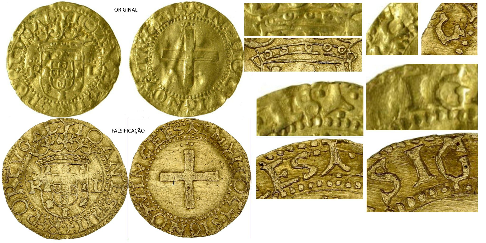
OS MODELOS DAS LEVADAS DE FALSIFICAÇÕES Já há muito que se conhece o uso de moedas de colecções institucionais como modelos de falsificações. O que não se conhecia ainda, era o uso de moedas do Portable Antiquities…
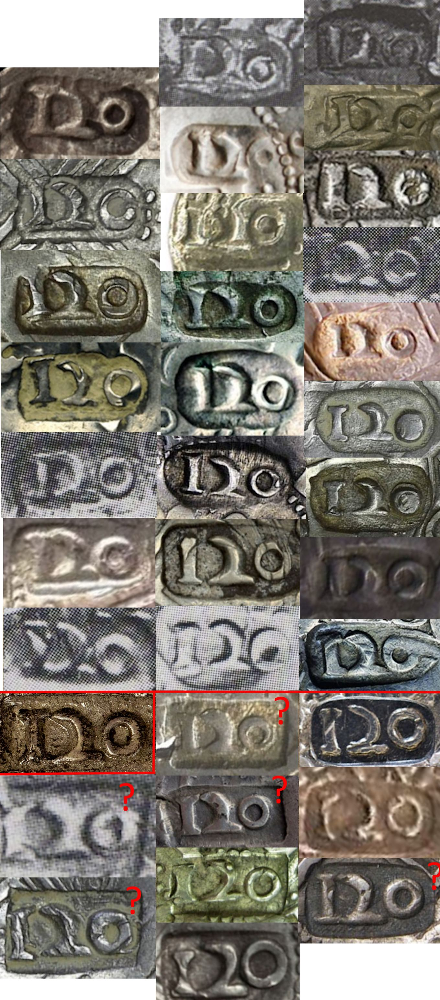
O CARIMBO 120 Os estudo mais avançado que existe relativo aos carimbos de D. João IV é o catálogo VMA. Aí, o autor dá como verdadeiros os carimbos que se apresentam acima e como falsos ou falsificados (sem distinção) os…
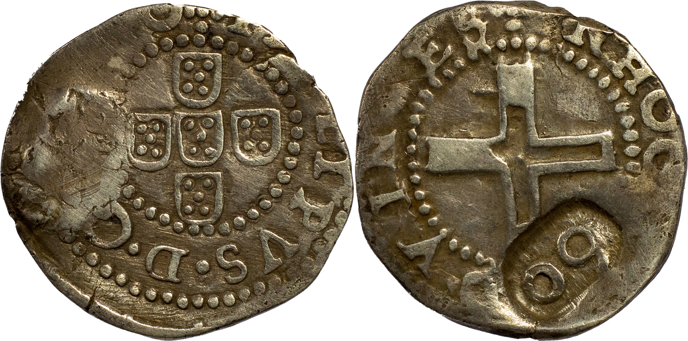
OS CARIMBOS SÃO OUTROS 500 No próximo leilão da Portuscalle Numismática, sem que disso se faça menção, vai à praça uma falsificação de um carimbo "60" de D. João IV sobre meio tostão filipino. Na imagem apresenta-se o…

CORRECÇÃO DOS ESTUDOS SOBRE O CARIMBO "SO" Em 1 de Fevereiro de 1642, em Lisboa, D. João IV mandava alçar o valor das moedas do reino, com a aposição de carimbos (ferros) em várias casas improvisadas um pouco por todo o…

CARIMBE DE ESQUELETE Acho uma pena que a NGC não saiba distinguir carimbos de escudete. Não sei se este tipo é falso da época, mas sei que não é original. Não sei também que mancha removeram no reverso, ou sequer se a…

OS SEGREDOS DOS MORABITINOS Há muitos anos, o senhor professor Diogo Galhofo dizia-me, com ar irónico, que o estudo dos morabitinos existia, mas que nunca ia ser publicado. Esse tipo de insinuações foram-me repetidas…
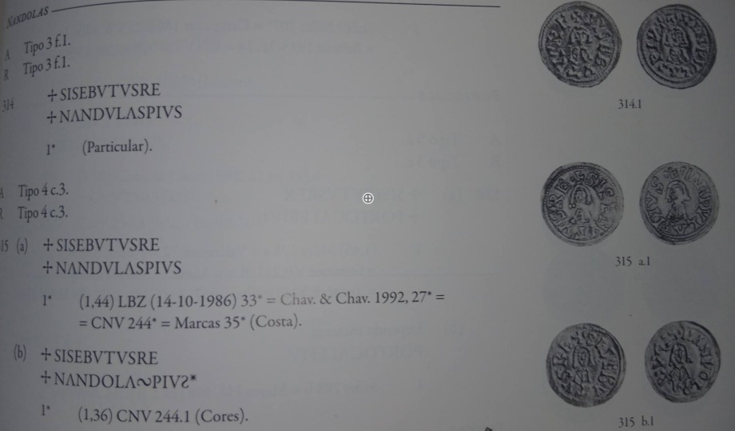
AINDA NANDOLAS Na numismática portuguesa tenho centrado os meus estudos na baixa idade média, pelo que não sou, nem de perto, nem de longe, versado em moeda visigoda. No entanto, tenho estudado os morabitinos…
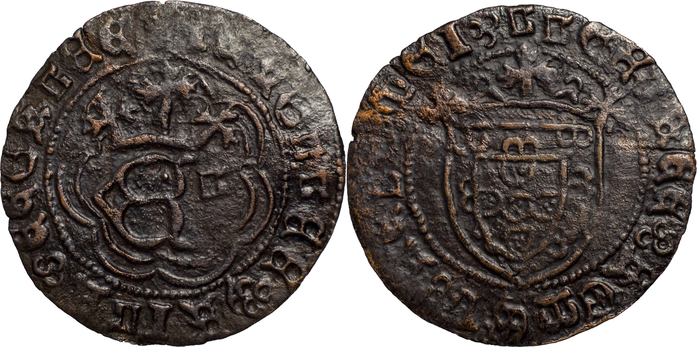
O LEAL FALSO DA ÉPOCA O método científico tem destas coisas. De uma moeda com pontos altos do metal à vista e sem capa, avalia-se uma pequena camada de prata que não chegou aos nossos dias, para concluir que uma moeda é…
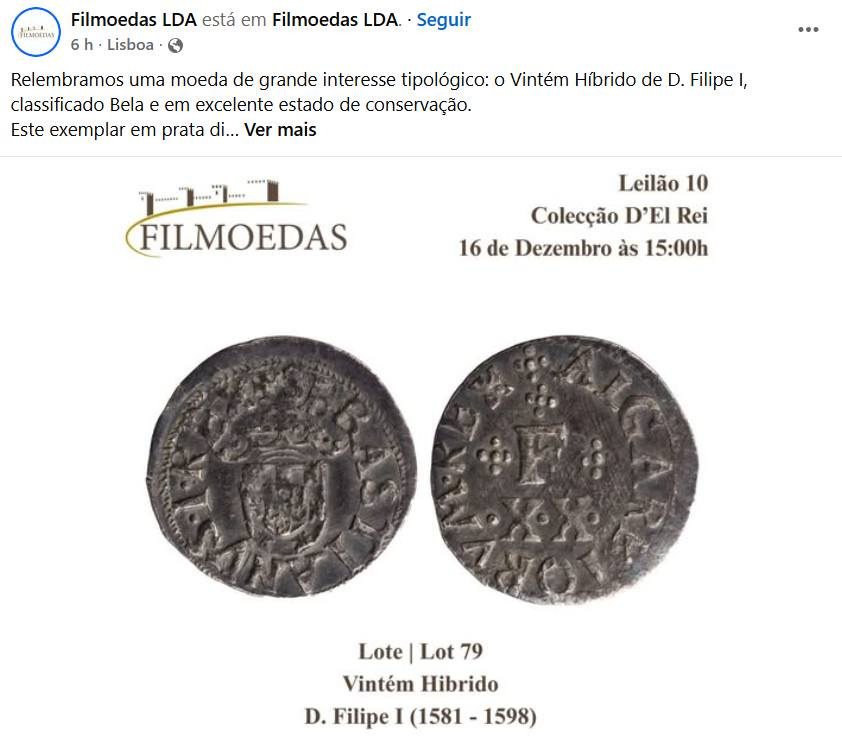
NUMISMÁTICA HÍBRIDA O apóstrofo está resolvido. Sim senhor. Agora falta só deixar de dizer asneiras. Na imagem pode-se ver uma rodela de metal falsificada em terras de "nuestros hermanos". Comparem as letras e tenham um…
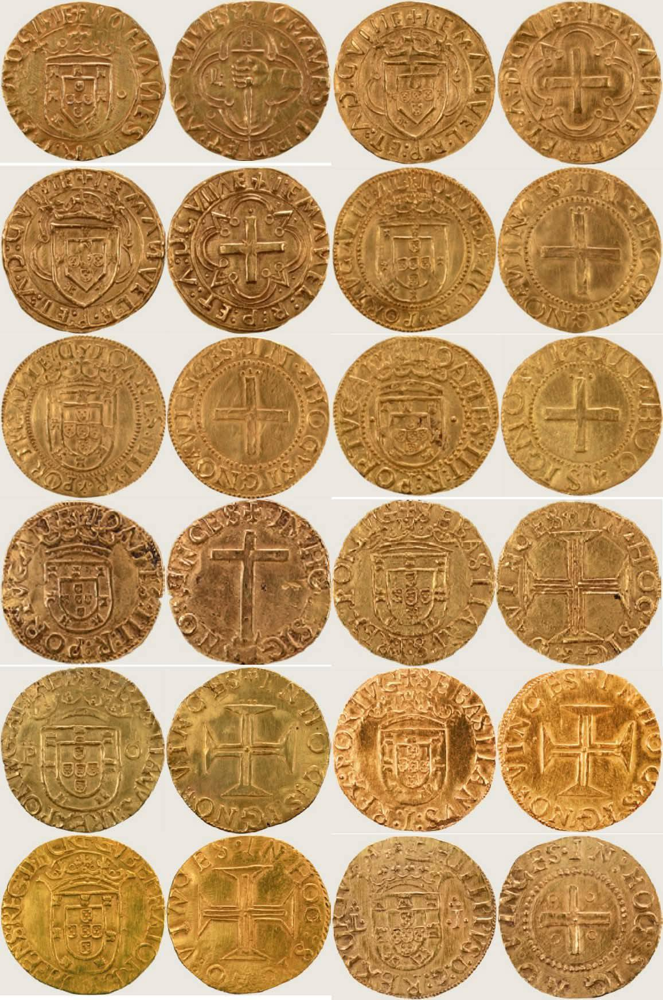
O DR. ENG. DESEMBARCA NO MINDELO Isto até poderia parecer uma manobra invertida de legitimação mística... Vejamos: O dr. Eng. denuncia uma situação; os especialistas dizem que o dr. Eng. é tonto; o dr. Eng. ruge; vai…

OS 2 GAROTOS Isto podia ser um conto de Natal, com personagens de farol na testa, no escuro da noite, a saquear os castelos de Portugal de Norte a Sul, durante uma série de anos, tudo resultando numa acumulação de stock…

LEILÃO 145 DA NUMISMA A Numisma é a mais antiga e mais importante casa de leilões de moedas em Portugal. Ao longo dos anos, tem tido o dom de apresentar no mercado um sem número de peças com extremo interesse histórico…

OS DINHEIROS DE PEDRO SÃO FALSOS! Desculpem este "alerta cm", mas fui, pela enésima vez, confrontado com um pedido de esclarecimentos sobre os dinheiros de D. Pedro e decidi fazer este post para que chegue a toda a…
O OURO DA ADIÇA No meio universitário científico português, durante o primeiro quartel do século XXI, acreditava-se que, sem mais, o mapeamento dos elementos traço do metal podia ser a "pedra de roseta" da história…

COMO CHAMAR GENTE À NUMISMÁTICA? Nos últimos anos temos assistido ao feliz surgimento de um projecto numismático nacional, que homenageia um dos maiores nomes da numismática portuguesa, tendo o cuidado de, não só…
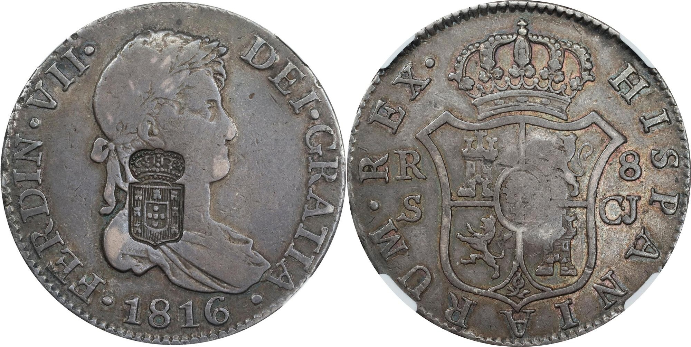
Posta à venda em leilão e certificada pela NGC com o grade VF-30, sem nenhuma indicação adicional. Nos carimbos de escudete a situação assume contornos de loucura. Mais de metade dos que vão a leilão são falsificados e…
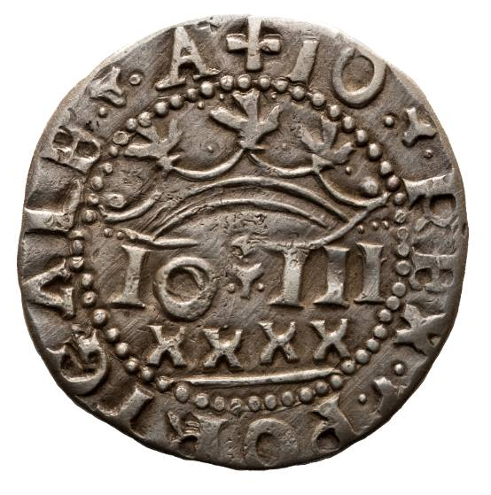
ESPECIALISTAS E DESINFORMAÇÃO Há uma série de indivíduos que andam nos fóruns a mostrar falsificações espanholas, daquelas "muito fáceis de detectar", da escola dos torneses de Miranda do senhor José Almeida, e a dizer…

O NASCIMENTO DE UM REINO Indagar acerca dos paralelismos que existem entre o nascimento e a ressureição é o mesmo que tentar compreender os nexos gerados entre os 4 evangelhos e o Apocalipse. Em ambos existe uma virgem…
"Avemos por bem , e damos luguir a quem quer que tever prata, e á trouxer aas cafas das noías moedas, que livremente a pofà laVrar ém efta dita moeda que ora mandamos que fe laVre , paguando os cuftos do lavramento , e…
Um podcast muito interessante do Museu do Dinheiro. Gostei de ouvir o discurso da técnica de restauro do museu, que parece revelar uma inversão na política de conservação e restauro das peças. Alturas houve em que o…
REFLEXÃO SOBRE O FUTURO DOS ESTUDOS DE NUMISMÁTICA A ordenação epigráfica das espécies, no futuro, quem a vai fazer é a inteligência artificial. Introduzindo o formato dos punções num algoritmo, com maior ou menor…
O ENG. RUI TORRINHA E AS MEDALHAS Conheci o sr. Eng. Rui Torrinha na ANP. Foi-me apresentado pelo sr. Rui Monteiro, quando alguns senhores da ANP decidiram, quase a final, participar com as suas colecções na minha…
O que a mim me espanta, nem é o Afonso Henriques das estrelinhas sair por 3,8k. É mesmo ver um leiloeiro, introdutor de falsificações no mercado de modo consciente, a criticar publicamente outra casa leiloeira. Sr.…
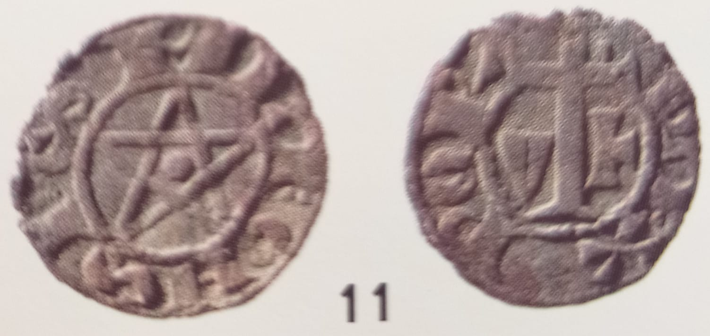
Um exemplar que ficou esquecido no trabalho que publiquei sobre os dinheiros com o "signum salomonis". Uma falsificação proveniente do leilão 46 da Numisma.
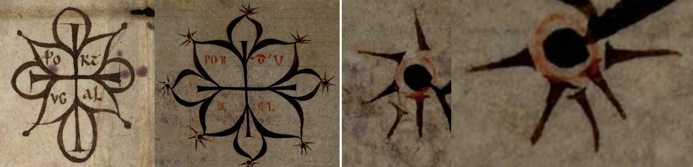
O sinal da esquerda é um original de D. Afonso Henriques, aposto num documento de 1144 (PT-TT-MSML-CE03-16). É talvez o mais cuidado de todos os sinais não rodados do rei fundador, motivo mais que óbvio para ter sido…
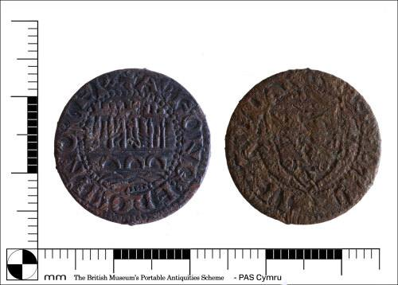
Aqui há uns anos, quando coloquei pela primeira vez a hipótese de existirem ceitis falsos da época, fui alvo da risada dos intelectuais dos ceitis, grupo socio-numismático no qual nunca estive inserido. Já tinha passado…

Há uns 10 anos, numa noitada em minha casa, tive que aturar um caro amigo numismata a debitar conhecimento sobre chinfrões, invocando a falsidade de todo e qualquer exemplar cujo florão da coroa cortasse a legenda. "Não…
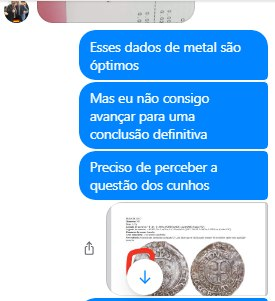
Relativamente ao forte de D. Fernando, sou agora avisado que andam a usar o meu nome para justificar a autenticidade da moeda. Ora, convém esclarecer a situação, até porque terá sido aproveitada de modo muito baixo,…

Há pelo menos 5 anos que deixei de ser coleccionador de moedas e passei a ser ajuntador. Não sou bem um ajuntador sem critério, porque ainda conservo uma ideia da composição do ajuntamento. Mas é cada vez mais abstracta…
As falsificações têm-se tornado cada vez mais omnipresentes no mundo da arte e das antiguidades. O exemplo da notícia abaixo podia ter paralelo numa exposição de moedas que ocorreu no Minho aqui há uns anos. Era olhar…
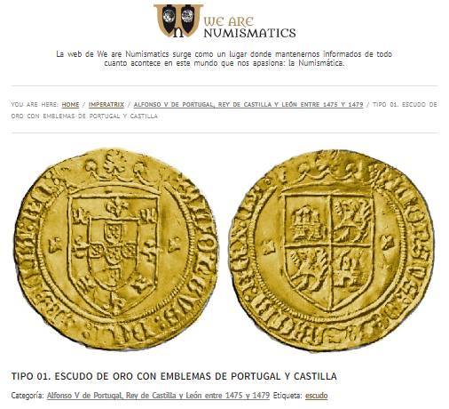
Mas anda tudo maluco?!? Agora o Manuel Mozo Monroy cataloga o escudo de ouro falsificado da Lanz, saído em 2002?

Para que fique claro: 1-O estudo do senhor professor Rui Centeno sobre os justos, para lá do que decalcou dos meus artigos e dos de Canto Garcia, é um emaranhado pedante de raciocínios completamente escusados e baseados…

Há duas moedas, aparecidas nos últimos anos, que podem ser o sinal mais claro da morte da numismática. Sobre essas duas moedas, não há nenhum "especialista" a comprometer-se com palavra nenhuma, excepção feita ao engº…

Tenho especial interesse pelo chinfrão, até porque fiz um estudo sobre ele. Continuo a ver as coisas que saíram nos últimos dois anos, que não acompanhei. A equipa de estudiosos da Portuscalle Numismática não para de me…

OS ESPADINS DA PORTUSCALLE NUMISMÁTICA - PARTE II Na altura em que comecei a estudar os espadins, o Sr. Alberto Silva, amável como sempre, disponibilizou-me fotos de alguns exemplares que tinha em carteira juntamente…

OS ESPADINS DA PORTUSCALLE NUMISMÁTICA - PARTE I Os falsificadores de moedas e aqueles que introduzem as falsificações no mercado têm traços característicos e comuns, que os anos de experiência me têm levado a…
DA CENSURA NA NUMISMÁTICA PORTUGUESA Porque somos pós-modernos, começamos por citar a infopédia: "A censura é um instrumento usado por regimes totalitários para impedir que a imprensa e outros meios de difusão de…
A actualidade numismática mundial está marcada pela falsificação das proveniências, sobretudo desde o caso da moeda de ouro dos Idos de Março. Neste artigo tenta-se a inventariação dos exemplares conhecidos do escudo de…
Tenho muitos textos em arquivo que podem ter o maior interesse para a numismática portuguesa. Este, acabei de o escrever hoje. E sinto que o devo publicar: "Ego??? Oh homem, eu tenho a minha auto-estima toda destruída.…
Como deve ser sabido, fartei-me de falar para numismáticos, exercício muito semelhante a um jogo de squash, em que a bola retorna pejada de perigosas lâminas. Ainda assim, dado o ultraje que consta no Fórum de…
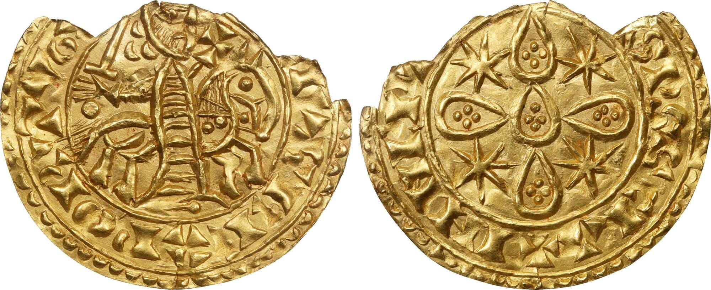
O morabitino lascado falsificado volta a aparecer, desta feita na Stack's. O preço é agora convidativo e a moeda até vem certificada pela NGC. Aliás, as letras e o desenho são mesmo "quase iguais". Não fossem os cunhos…
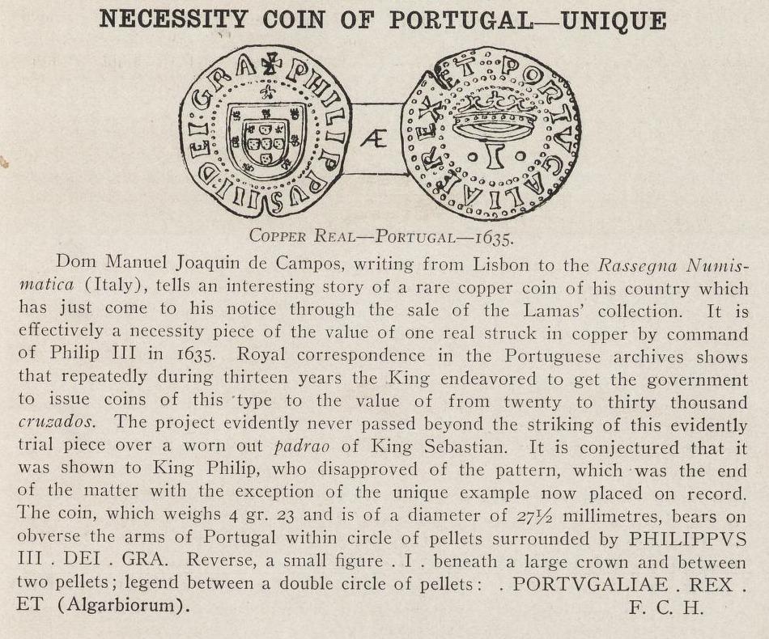
Um artigo publicado no "The numismatist", em 1909, acerca de uma peça que hoje está classificada no catálogo Alberto Gomes como fantasia/falsificação, na secção de Filipe I.
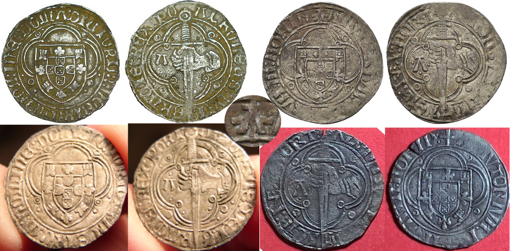
As moedas da esquerda já estavam referenciadas como falsificadas, mas as da direita não. A letra é "quase igual", mas não é igual. O pormenor mais assustador nestas falsificações é a explicação de toda a iconografia do…
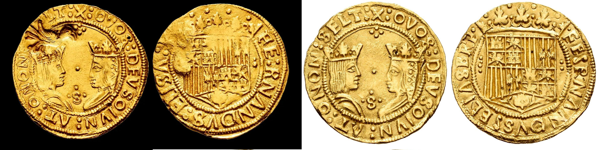
A moeda da esquerda ia a leilão, mas suponho que tenha sido retirada. O carimbo do açor é notoriamente falso. Como está virado à direita, é daquelas coisas que qualquer cego vê. Já a moeda base deixa-me sérias dúvidas.…